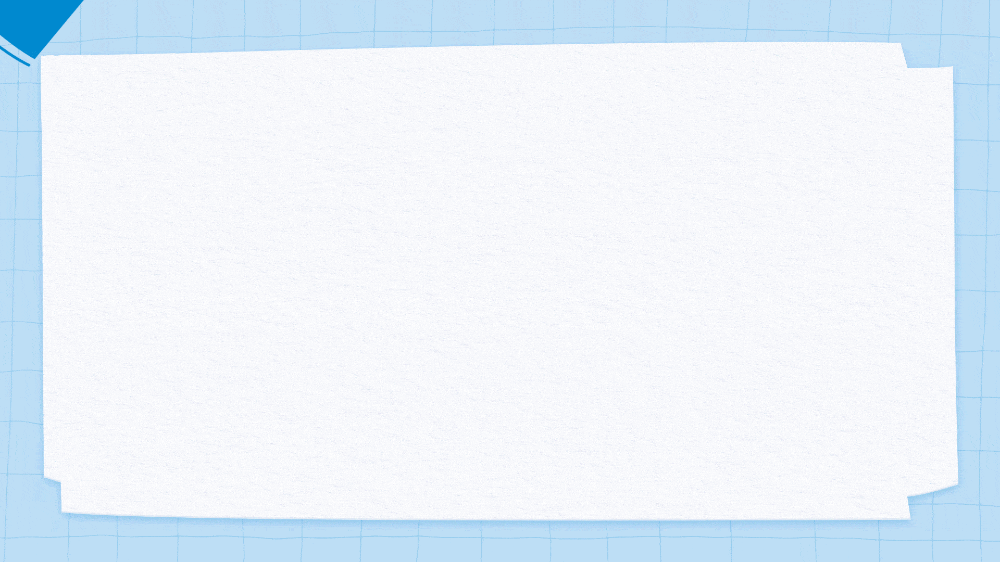

시작하기

디지털 사회와
컴퓨터
빈칸에 들어갈 글자를 찾아봅시다.
은/는 입력된 정보를 정해진 과정대로 처리하고,
그 결과를 제공하는 기기를 말합니다.
문제 찾기에서는 문제 상황에 제시된 요소를 분석하여 현재 상태와
상태를 정의합니다.
컴
순
언
터
어
퓨
표
목
서
도
채점하기
채점하기 전에
답을 맞게 입력했는지
확인해 보아요.
다 했어요
다음 활동하기
알고리즘은 자연어,
, 의사 코드 등의 표현 방법이 있습니다.
프로그래밍
은/는 컴퓨터에게 명령하기 위해 만들어진 언어를 말합니다.
컴
순
언
터
어
퓨
표
목
서
도
채점하기
채점하기 전에
답을 맞게 입력했는지
확인해 보아요.
다 했어요
다음 활동하기
디지털 사회와 컴퓨터
컴퓨터
은/는 입력된 정보를 정해진 과정대로 처리하고, 그 결과를 제공하는 기기를 말합니다.
문제 찾기에서는 문제 상황에 제시된 요소를 분석하고 현재 상태와
목표
상태를 구분합니다.
알고리즘은 자연어,
순서도
, 의사 코드 등의 표현 방법이 있습니다.
프로그래밍
언어
은/는 컴퓨터에게 명령하기 위해 만들어진 언어를 말합니다.
이 단원에서 성취한 내용을 점검해 봅시다.
처음으로
생활 속에서 컴퓨터가 활용되는 사례를 탐색하였어요.
문제를 해결하기 위해 프로그래밍할 수 있어요.
생활 속 문제를 해결하는 알고리즘을 구상하였어요.
생활 속에서 컴퓨터를 활용해 해결 가능한 문제를 탐색해 보려는 태도를 가지게 되었어요.
프로그래밍할 때 친구와 협력하였어요.
다 했어요
정말 다 했나요?
네
아니요